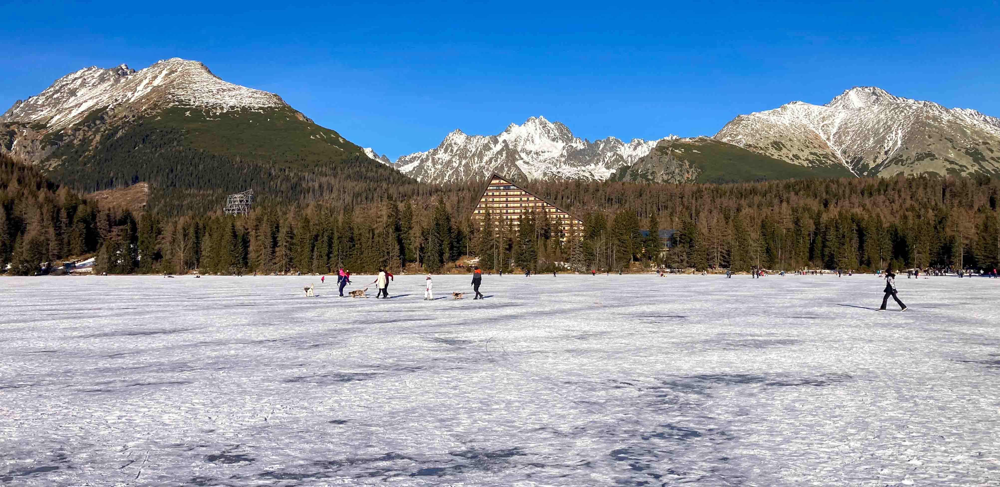

Новий рік у Словаччині🌲
Перевершив очікування🫶

Плюси:
- ✅ порівняно легко і швидко добиратися;
- ✅ порівняно бюджетно, якщо винаймати житло подалі від розпіарених курортів;
- ✅ідеально для тих, хто любить походи в гори та зимові види спорту;
- ✅ немає проблем з комунікацією: молодь чудово говорить англійською, а словацька має багато схожих за звучанням слів з українською;
- ✅ їжа дуже подібна до їжі Закарпаття, хто любить кнедлики і ґомбовці – тому здаватиметься, що ви вдома;
- ✅ гарна природа, ландшафти подібні до наших, рідних, українських;
- ✅ місцеві мешканці у сфері обслуговування привітні та доброзичливі, ментально значно ближчі і зрозуміліші нам, ніж темпераментні європейці південної Європи, чи надмірно стримані мешканці північних країн
Мінуси:
- 🔵 вельми груба та зверхня поведінка словацьких митників (справедливості заради скажу, що перетинала кордон із Словаччиною вперше і можливо то просто мені такі трапились);
- 🔵 величезна кількість ромів, що мешкають в країні (за неофіційними даними – до 11% населення), і хоч поводяться вони там дуже спокійно, а місцеві жителі на них зовсім не реагують, мій особистий досвід взаємодії з циганами в Україні змушував постійно озиратися і намагатися відійти від них подалі
Якщо ви шукаєте (як шукала я) тихого, спокійного відпочинку, подалі від людей і ближче до природи, рекомендую містечка 📍Spišská Nová Ves📍 або 📍Poprad📍, національний парк 📍Slovensky raj📍 та поїздку у Високі Татри на 📍Štrbské pleso📍.
Дякую Словаччині за 10 днів психологічного і морального спокою, за відпочинок і відновлення!🫶
П.С. На фотографії я радісно підстрибую на замерзлому високогірному озері Štrbské pleso, а не стою на снігові і у мене підкосились і роз'їхались ноги😆😁